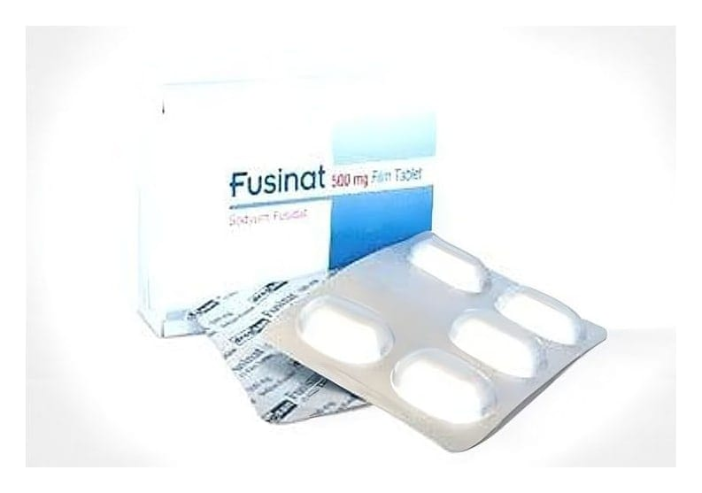

Fusinat 500 mg Film Tablet, 15 Adet

Ne için kullanılır
KT · Bölüm 1FUSİNAT, 15 tabletlik ambalajlarda kullanıma sunulan bir antibiyotiktir. Tabletler beyaz renkli, bir yüzü çentikli, bikonveks film kaplıdır. FUSİNAT etkin madde olarak sodyum fusidat içerir. Sodyum fusidat, bakterilerin çoğalmasını önleyici veya bakterileri öldürücü etki gösterir.
FUSİNAT tablet, Deri ve yumuşak doku enfeksiyonları, Yara enfeksiyonları, Septisemi (bakterilerin kana geçmesi sonucunda ateş ve titremeye neden olan hastalık) Kemik ve kalp dokusu enfeksiyonları Akciğer enfeksiyonu (pnömoni) Kistik fibroz (akciğer, böbrek veya pankreasta bozukluğa neden olan kalıtımsal bir hastalık) ile ilişkili enfeksiyonlar, Antibiyotik kullanımına bağlı ishalin geliştiği infeksiyonların tedavisinde kullanılır.